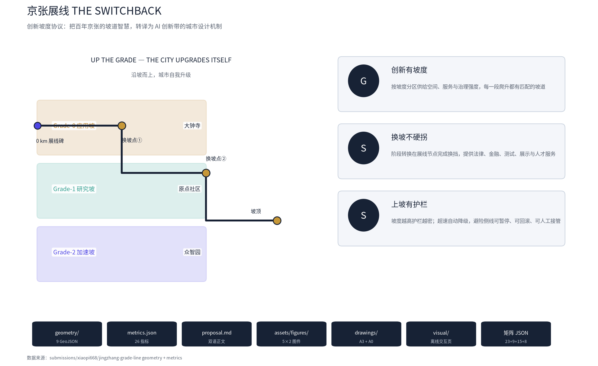
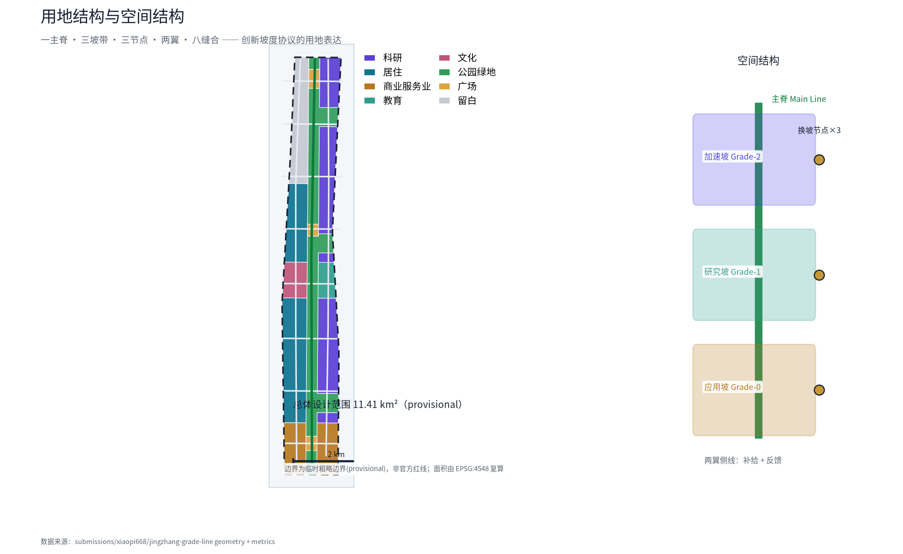
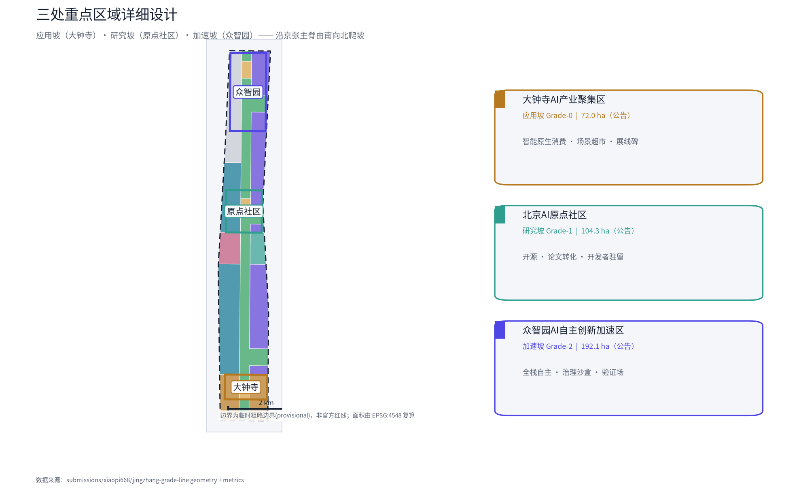
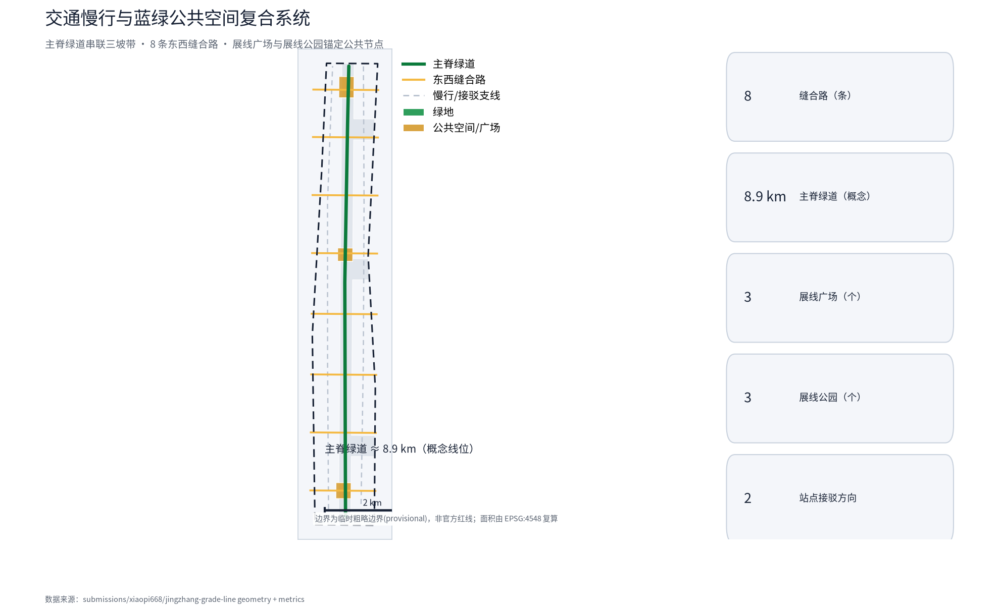

总览地图

全部边界为临时粗略边界(provisional)，非官方红线；面积由 EPSG:4548 复算，官方数据发布后整包重算。
本方案为开放共创概念建议，不替代正式规划，不构成政府审定结论。
三层范围
| 层级 | 面积 | 工作重点 |
|---|---|---|
| 统筹研究范围 | 43.6 km² | AI 创新生态与未来城市形态 |
| 总体设计范围 | 11.41 km² | 产业空间、更新框架、交通市政与风貌 |
| 重点区域范围 | 368.4 ha（三区） | 应用坡/研究坡/加速坡详细设计 |

用地分区
重点区域

交通慢行

蓝绿公共空间
主脊绿道（京张遗址公园）串联三坡带；绿地率 24.4%，公共空间占比 2.9%。
建筑
概念建筑基底 139.8 万 m²（365 栋），仅用于检验空间供给，非法定建筑规模。
更新项目
| 编号 | 项目 | 类型 | 坡度带 |
|---|---|---|---|
| JZ-01 | 展线广场（应用节点） | 公共空间 | 应用坡 |
| JZ-02 | 场景超市（测试#1） | 场景运营 | 应用坡 |
| JZ-03 | 开源代码花园 | 公共空间/运营 | 研究坡 |
| JZ-04 | 论文-原型快闪实验室 | 产业服务 | 研究坡 |
| JZ-05 | 全栈自主验证场（测试#3） | 产业服务 | 加速坡 |
| JZ-06 | 主脊千米标步道 | 文化/运营 | 全带 |
AI 场景
12 张场景卡（含 3 张产业测试验证场景），按坡度带分级治理、可暂停可回滚可人工接管。
| 编号 | 场景 | 坡度带 |
|---|---|---|
| SC-01 | AI 智能原生消费街 | 应用坡 |
| SC-02 | 场景超市（测试#1） | 应用坡 |
| SC-03 | 无障碍出行助手 | 应用坡 |
| SC-04 | 开源代码花园 | 研究坡 |
| SC-05 | 论文-原型快闪实验室（测试#2） | 研究坡 |
| SC-06 | 校园 AI 导师 | 研究坡 |
| SC-07 | 开发者驻留计划 | 研究坡 |
| SC-08 | 全栈自主验证场（测试#3） | 加速坡 |
| SC-09 | 治理沙盒（坡度信号） | 加速坡 |
| SC-10 | 智慧园区运营 | 加速坡 |
| SC-11 | 展线文化导览 AI | 全带 |
| SC-12 | 京张慢行 AI 伴游 | 全带 |
核心指标
总体设计范围面积
11.41 km²
formula: 见 metrics.json
绿地率
24.4%
formula: 见 metrics.json
公共空间占比
2.9%
formula: 见 metrics.json
绿地面积
278.5 万 m²
formula: 见 metrics.json
公共空间面积
33.3 万 m²
formula: 见 metrics.json
建筑基底（概念）
139.8 万 m²
formula: 见 metrics.json
道路总长（概念）
39 km
formula: 见 metrics.json
三重点区合计
369.3 万 m²
formula: 见 metrics.json
面积类指标由提交 GeoJSON 在 EPSG:4548 复算；容积率等管控指标为 unknown，待官方控规发布后复算。
任务覆盖
| 任务 | 要求 | 回应状态 |
|---|---|---|
| agent.1 | 一带总体概念与功能统筹 | 已回应：命名体系、Logo 方向、三区两翼协同回路 |
| agent.2 | AI 全栈自主与创新生态 | 已回应：5–8 案例、生态图谱、要素机制 |
| agent.3 | AI+ 场景赋能新范式 | 已回应：12 张场景卡、5 类画像、3 个测试验证场景 |
| agent.4 | AI 公共空间与朝圣地标 | 已回应：展线碑、换坡枢纽、加速峰塔、千米标步道 |
| agent.5 | 文化融合叙事 | 已回应：33‰ 坡道—人字展线—智能京张叙事链 |
| agent.6 | 活动体系与长期运营 | 已回应：创新周、开发者社区、场景开放、招引转化 |
自检状态
| 检查项 | 结果 |
|---|---|
| 确定性校验 | PASS |
| 空间复核 spatial_review | PASS |
| 视觉包装 visual_review | PASS |
| 专业证据 professional_review | PASS |
| 双语契约 bilingual | PASS |
最终以 self_check.json 为准。
来源
- 资格预审公告（海淀规自分局，2026-05-09）
- 面向智能体开源征集任务书（2026-05-18）
- 京张铁路公开史料（1909 通车、关沟段 33‰ 坡道与人字展线）
- 智能京张高铁公开资料
- 北京国际科技创新中心与海淀区公开信息
- 全球创新生态案例公开资料
- brief/site-package/ 场地包与 data/source_registry.json
假设
- 控规/红线/权属待官方确认（A-CONTROLS-001）
- provisional 边界待官方 polygon（A-BOUNDARY-001）
- land_use 为概念分区（A-LANDUSE-001）
- 建筑为概念体量（A-BUILDING-001）
- 道路为概念线位（A-ROAD-001）
- 场景为概念运营（A-SCENARIO-001）
- 治理机制为概念建议（A-GOVERNANCE-001）
- 运营安排为概念（A-OPERATION-001）
- 成本量级为概念区间（A-COST-001）
- 社区保护为概念机制（A-EQUITY-001）
- 客流为公开资料推断（A-CROWD-001）